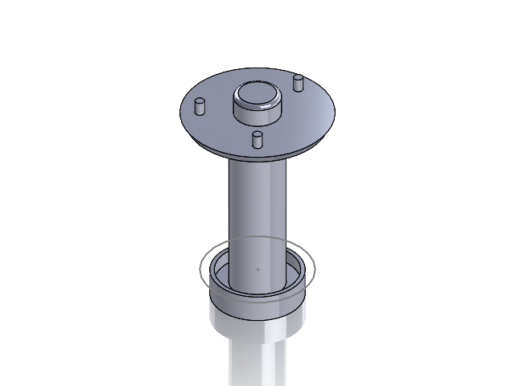
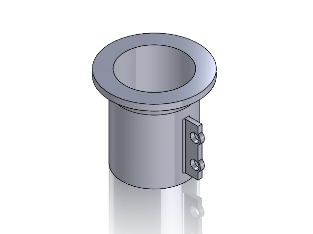

Regenerative suspension
TEAM PROJECT
01 / SHOCK
02 / HOUSINGMECHANICAL SYSTEMS · ENERGY CONVERSION
Finding energy in
every movement.
How might suspension movement generate energy while helping drivers become more aware of wear and maintenance needs? Our team explored this question with a rack-and-pinion mechanism, a compound gear train, and a DC motor.
The mechanism
Vertical suspension motion drives a rack and pinion. The gear train increases rotational speed before driving the motor as a generator.
Prototype & findings
The team used 3D-printed gears, racks, and mounts to explore alignment and structural stability. The poster reports successful energy generation and LED illumination; stable gear meshing improved performance.
A driver-centered problem
Suspension issues can be difficult to diagnose. Reliability, comfort, maintenance cost, and safety shaped the problem.
Build, align, iterate
Low-fidelity prototypes explored gear meshing, component alignment, and structural stability.
Demonstrate the principle
The prototype illuminated an LED. Suspension monitoring remains a potential application.
Project credits & scope +
Team credited on the poster: Johan Cruz, Junior Solis, Mohammed Elnour, Carlos Perez, Abraham Mesfin, and Lucas Zeng. Results describe the team's prototype. The poster does not specify individual responsibilities or measured power output.